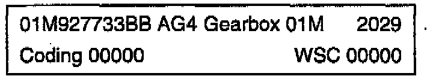
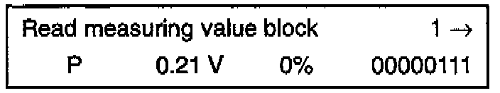
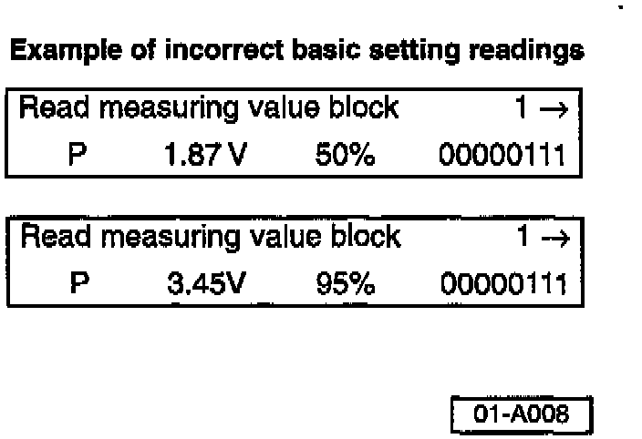
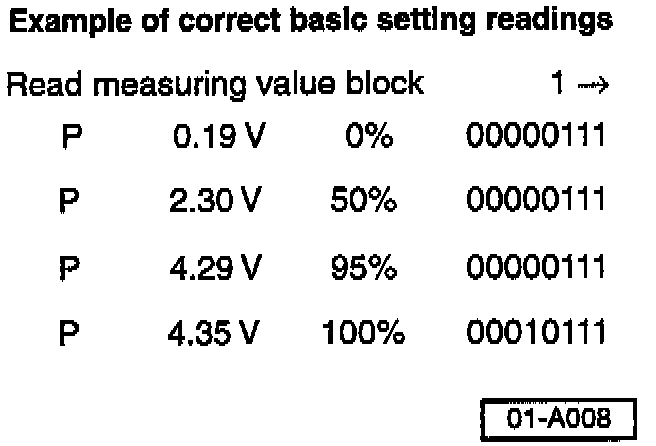
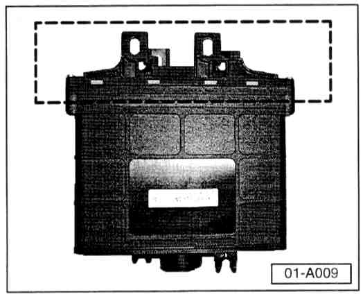
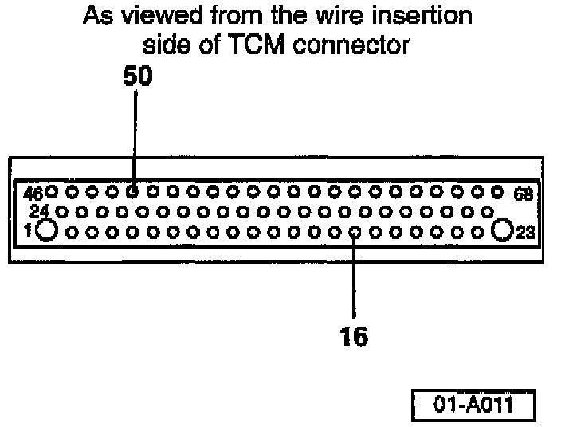
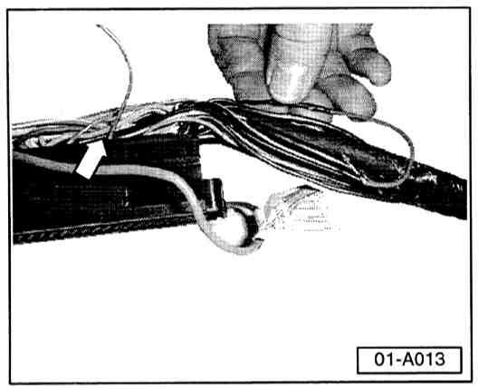
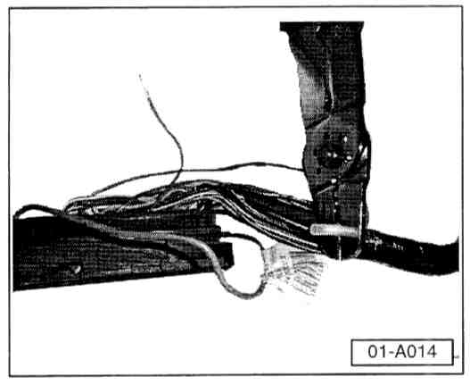
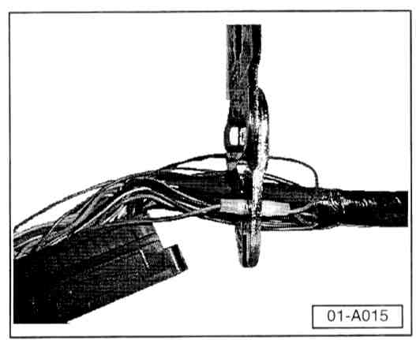

Service
If any of these conditions exist, check EPROM level and throttle angle setting (if EPROM level is below 4066) as follows:- Connect VAG 1551 Scan Tool.
- Switch ignition ON (do not start engine).

Indicated on display:
- Press buttons -0- and -2- to select address word "02 Transmission Electronics".

Indicated on display:
- Press -Q- button to confirm input.

Indicated on display: Example shows EPROM level as 2029.
- Press the --> button to advance program.
Indicated on display:
- Press buttons -0- and -8- to select function O8 "Read measuring value block".
Indicated on display:
- Press -Q- button to confirm input.
Indicated on display:
- Press buttons -0-, -0- and -1- (to input display group 001).
- Press -Q- button to confirm input.

Indicated on display:
- Without pressing accelerator pedal, print screen.
Note:
While performing the following steps press the accelerator pedal slowly do not release the pedal.

These 2 displays show incorrect throttle angle setting readings and should be used as examples only
- While observing VAG 1551 display press accelerator pedal until third display field reads 50%, then print screen.
- While observing VAG 1551 display continue pressing accelerator pedal until third display field reads 95%, then print screen.
- Continue pressing accelerator pedal to the pedal stop while observing the fourth digit in the fourth channel.

- Fourth digit must change from 0 to 1, indicating kickdown, hold for approx. 5 seconds (sets throttle angle setting).
- Release accelerator pedal fully and press --> button.
- Repeat procedure again.

- Compare first test voltage readings in second display field and throttle angle percentages in 3rd display field with readings from second test.
If readings are not within 0.05 volts, then throttle angle setting was not correct. Perform the following:
- Switch ignition OFF.
Verify that vehicle is equipped with a Digimat 2.1 TCM.
TCM, identification
- Lift rear seat.
- Locate and inspect TCM electrical connector receptacle.

The Digimat 2.1 TCM electrical connector receptacle (boxed area) is made of black plastic (NOT Aluminum).
Note:
Whenever a Digimat 2.0 TCM is replaced with a Digimat 2.1 TCM (with EPROM level below 4066), the resistor wire modification below MUST be performed.
DO NOT perform procedure if the electrical connector receptacle is made of aluminum.
DO NOT perform procedure if EPROM level of Digimat 2.1 TCM is above 4066.
Resistor wire, installing

- Disconnect 68 pin connector from TCM.
- Out tie wrap at end of connector and remove cover from connector by depressing tab with small screwdriver while pushing cover in direction of -arrow-.

- Locate cavity 50 of TCM connector -arrow- (cavity should be empty).
CAUTION!
Part numbers are for reference only. Always check with your Parts Dept. for the latest parts information.

- Install electrical connector of resistor wire Part No. ZVW 311 100 into this cavity (50).
- Remove enough tape to expose 125 mm (approx. 5 in.) wire harness.
- Locate gray/green wire in cavity 16 of TCM connector -arrow-.
- Follow wire from cavity 16 back into harness approx. 100 mm (4 in.), cut wire at this location.
- Strip insulation from both ends of wire.

- Route resistor wire along wiring harness to cut wire.

- Twist stripped end of resistor wire with end of (gray/green) wire coming from harness, install butt-splice and crimp as shown.

- Crimp remaining end of gray/green wire (from TCM connector end into other end of butt-splice as shown).
- Re-tape wiring harness.
- Reinstall TCM connector cover and install new tie-wrap.
- Reinstall connector onto TCM.
- Verify throttle angle setting using Function 08 display group 001-->(IMPORTANT! kickdown switch activation must be verified during throttle angle setting).